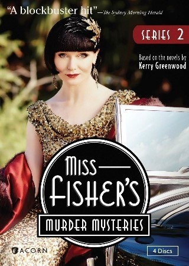

- 왓챠
- 미스 피셔의 살인 미스터리
- 미란다
- it crowd
《미스 피셔의 살인 미스터리》
《미스 피셔의 살인 미스터리》 (영어: Miss Fisher's Murder Mysteries)는 2012년부터 현재까지 방영된 오스트레일리아의 드라마이다.

등장인물
프라이니 피셔(에시 데이비스)
존 "잭" 로빈슨 형사(네이선 페이지)
도러시 "돗" 윌리엄스(애슐리 커밍스)
휴 콜린스 순경(휴고 존스톤버트)
버틀러(리처드 블라이)
버트 존슨, 섹 예이츠(트래비스 맥마흔, 앤서니 샤프)
엘리자베스 "맥" 맥밀런 박사(태미 매킨토시)
제인 로스(루비 비스웨미스)
프루던스 엘리자베스 스탠리(미리언 마걸리스)
머독 포일(니컬러스 벨)